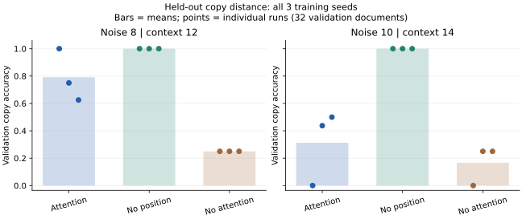

卒業研究を、実行と報告まで進める：まとめて参照
第56章の補習です。距離の変更でデータ・位置表現・採点位置がずれないよう、まず動く比較から始め、次に一つの条件を変えます。読むだけで完了にせず、各段階の成果物を残してください。
1．どの距離を測るか、図で決める
文書を [BOS, A, noiseがn個, separator, A, EOS] とします。BOSは開始、EOSは終端、separatorは区切り、noiseはコピーに不要なランダム記号です。位置番号は0からです。
| 場所 | 位置番号 |
|---|---|
| 最初のコピー対象A | 1 |
| separator | n+2 |
| コピー先A | n+3 |
| EOS | n+4 |
入力の長さはn+4、文書全体はn+5。separatorの位置のlogitから、次のコピー先Aを予測します。最初のAからseparatorまでの距離はn+1、二つのAの距離はn+2です。論文や図で「距離」とだけ書かず、どちらかを定義してください。
元のTiny Transformerはnoise4個に固定されていました。新しいdistance_study.pyは長さからseparatorの位置を求め、最長入力に合わせて位置Embeddingの行数も用意します。長さを変えても固定の位置6を採点する誤りを防ぎます。
1・位置を先に予想する
n=8のとき、文書長・入力長・separator・コピー先の位置を答えてください。
解答と考え方を読む
文書長13、入力長12、separatorは10、コピー先は11です。separatorの出力からコピー先を予測します。
2．小さい確認を先に通す
実装ラボの準備を終え、リポジトリのフォルダで実行します。
python -m unittest discover -s labs -v
新しいtest_distance_study.pyは、分割間の文書重複、再現可能なデータ、コピー位置の対応、最大系列長、未来を変えても過去が変わらない性質を確認します。正しい答えをseparator位置だけへ置く模型でも採点を確認するので、学習の成否とは独立に採点位置を検査できます。
No module named tiny_transformer なら、distance_study.py、tiny_transformer.py、paired_bootstrap.pyを同じlabsフォルダに置きます。torchの導入は第26章。index out of range は表の行番号が範囲外という意味で、語彙IDと位置IDを分けて調べます。損失のshapeは第32章へ戻れます。
3．実験票を書いてから九実行を残す
報告書テンプレートへ、主仮説と固定条件を書きます。例：「noise4・6で学習したとき、位置Embeddingを外すと未学習のnoise8でcopy正解率が変わる」。改善する方向まで仮説にするなら、結果を見る前に記録します。
python labs/distance_study.py --steps 300 --out labs/runs/distance-study
3条件（Attentionあり、位置Embeddingなし、Attentionなし）×3seedです。noise4・6の文書だけで学習し、noise4・6・8を別のvalidation文書で測ります。各長さは全256文書、train192、validation32、test32。対象記号の四種類が各分割で同数になるよう作ります。noise8のtrain文書も作りますが、学習関数はその長さを選ばず、未学習の距離として扱います。
| 保存物 | 確認すること |
|---|---|
| plan.json | 開始前の仮説・設定・データhash・testを使うか |
| results.json | 九実行の状態と文書別の正誤。失敗も残る |
| 条件名-seed.pt | 各実行の重み・optimizer・乱数・設定を保存したcheckpoint |
| results.csv | 条件・seed・長さ・損失・copy正解率 |
| paired_validation.json | 同じ文書の条件差と再抽出区間 |
同じseedの各条件は同じ更新数・同じ抽出文書・同じ処理トークン数を使います。有効な演算量と実時間は条件で違うため、「計算量まで完全に同じ」とは書きません。32文書の区間は小標本の教材例で、学習seedのばらつきを含みません。九実行を全て報告し、区間を一つの強い結論へまとめないでください。
新しいコマンド引数はPythonの橋、データの再抽出は第22章、学習ループは第33章へ戻れます。コード中の rng.randrange(2,6) は2〜5の整数を選びます。*noise はnoiseの並びを文書の中へ展開する記法。extend(rows) は複数の行をリスト末尾へ追加します。setで重複を除き、sortedで順を固定してからshuffleするので、同じseedの文書が再現できます。
2・何が公平か
Attentionなしを含む三条件で同じトークン数を使いました。実時間の差を測らなくても同じ速度だと言えますか。
解答と考え方を読む
言えません。Attentionなしでは位置間の計算を省いています。同じデータ量は同じ演算量や速度ではありません。
4．一つの変更を自分の問いにする
保存した自作checkpointは、次のコマンドで文書別の誤答と最初の層の観測を調べられます。
python labs/inspect_distance.py labs/runs/distance-study/attention-0.pt
inspect_distance.pyは、保存設定から未学習の長さを求め、同じデータhashかを確認して読みます。誤答は文書・正解ID・予測IDを並べます。観測ではコピー対象とコピー先だけを変えた二文書を同じ層で比べ、hookを解除します。平均絶対差があることは因果的な役割の証明ではありません。第51章へ戻り、観察と次の介入案を別々に書きます。
fで始まる文字列の {variant} は、その変数の値を名前へ埋め込むPythonの書き方です。attention-0.pt は条件attention、seed0の保存物。新しい研究コードの保存・読み込みはPythonの橋へ戻れます。
結果を見て仮説を変えた場合は、次を探索実験として記録します。たとえば未学習のnoiseを8から10へ変え、他の条件を固定します。
python labs/distance_study.py --steps 300 --held-out-noise 10 --out labs/runs/distance-10
入力長は14となり、位置Embeddingの行数も自動で14へ変わります。全条件で同じ行数ですが、noise8実験に比べて保存するパラメータ数も増えます。したがって主張は「この実装で長さを延ばした結果」であり、長さだけの純粋な効果だと断定しません。全長さで同じ最大contextを使う対照を次の実験にするなど、交絡を考えます。
「出力先には別の実験票がある」というエラーは、設定の違う実験を同じフォルダへ混ぜないための確認です。新しい --out を指定してください。より長い距離では計算とメモリが増えるため、まず8と10の小さい二点で手順を確認します。
5．最終testの前に固定する
validationで確認した後、設定と解釈のルールを固定し、最終評価用の新しいフォルダを使います。
python labs/distance_study.py --steps 300 --evaluate-test --out labs/runs/distance-final
testを見て設定を選び直したら、そのtestを最終的な未知の評価と呼び続けません。全seedの値、平均、標準偏差、同じ文書の対応差を区別します。高い点数が出ない場合も、仮説を支持しなかった結果を記録します。
6．図表と報告を完成させる
まずCSVを表として開き、横をnoise個数、縦をcopy正解率として、各条件・各seedを分けて描きます。Excelなどで作っても構いません。全トークンのNLLは別の図にします。正解率100%なのにNLLが0でない理由は、第56章のランダムなnoiseの説明へ戻ります。
報告書は、問い、原論文と教材実装の違い、式とshape、方法、全結果、失敗分類、限界、次の実験の順に書きます。位置なしがよくても一般のLLMで位置表現が不要とは言えません。既存研究との差は第54章で調べ、教材の値を再現する部分と自分の変更を分けます。
最後に、公開物だけを別フォルダへコピーし、READMEの準備と実行から表を作り直します。原本、認証情報、ローカルパス、個人名を含めないか第52章で確認します。別の人による確認は自己確認とは別です。協力者がいない場合は「第三者による再現は未実施」と記録します。
3・到達を判定する
正解率が低かったため、よいseedだけを表へ残しました。卒業研究の到達条件を満たしますか。
解答と考え方を読む
満たしません。全実行と失敗を報告し、公平な比較と再実行できる手順を残すことが条件です。結果が負でも、その条件を満たせば小さな研究を完結できます。
制作時の実測例：負の結果も読む
Python 3.14、PyTorch 2.13.0+cpu、NumPy 2.5.2で上の二設定を各300更新、各3seedで実行しました。下はvalidationのcopy正解率で、括弧内はseed0／1／2です。
| 条件 | 未学習noise8（context12） | 未学習noise10（context14） |
|---|---|---|
| Attentionあり | 1.000／0.750／0.625 | 0.000／0.438／0.500 |
| 位置Embeddingなし | 1.000／1.000／1.000 | 1.000／1.000／1.000 |
| Attentionなし | 0.250／0.250／0.250 | 0.000／0.250／0.250 |

この合成課題では位置Embeddingなしがよい値でした。一方、Attentionありは未学習距離でseedによる違いが大きく、失敗もあります。これを「位置表現は一般に不要」とは解釈しません。noise10はcontextも増えているため、二実験の差を距離だけへ帰せない点も報告します。各32文書の小さいvalidation集合です。
全18実行の設定・文書別結果・対応差を配布します。noise8の実行だけは固定条件で最終testも測り、noise10は探索としてvalidationだけを測りました。良いseedだけを採用せず、全結果と評価を使った範囲を確認する例です。第三者による再現は未実施です。
完了の自己確認
解答を隠して三つの確認問題を解き、位置と損失を説明し、テストと全実行を保存し、自分の変更・限界を報告できたら、この教材の卒業研究を完了とします。論文の数値全体の再現や研究者としての能力保証とは区別します。